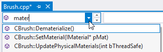
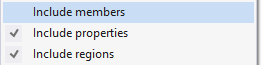

List Methods in File
Use the Down Arrow in the VA Navigation Bar, or the default shortcut Alt+M, to see a list of methods in the current file. Filter the list. Select to jump.

Open the context menu from within a list to select what lists should include.

Learn more.